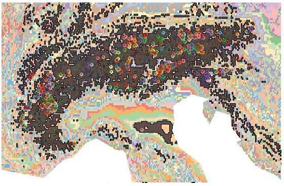
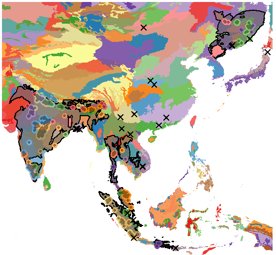
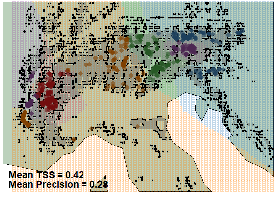
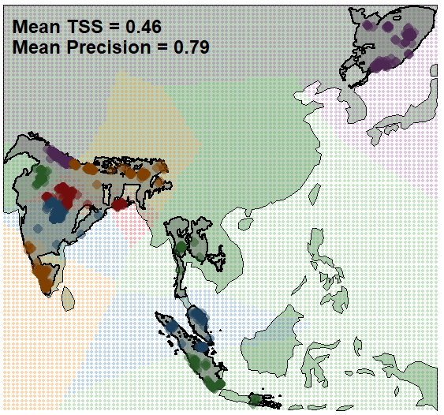
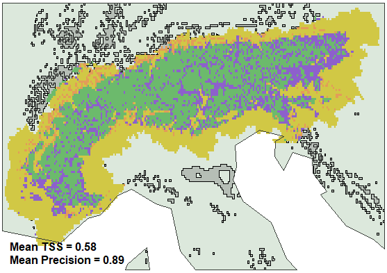
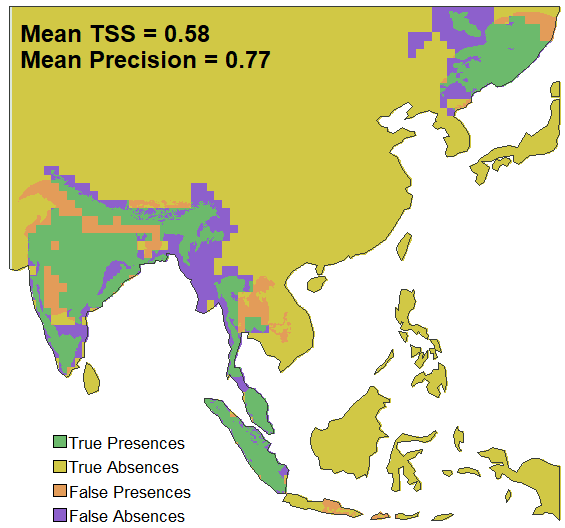
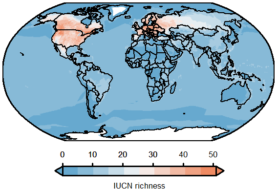
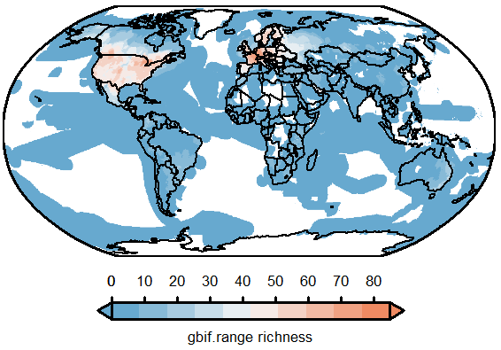
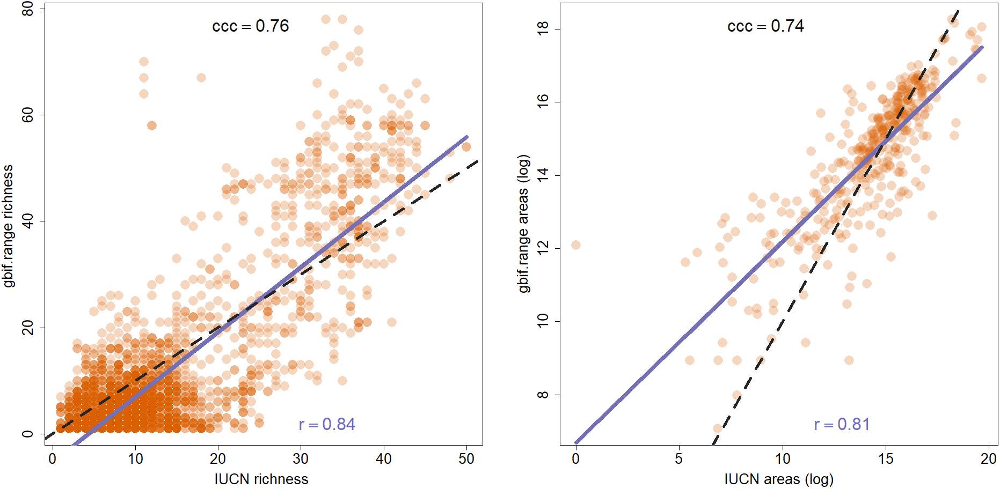

Supplementary: `gbif.range` manuscript's figures
Source:vignettes/reproducing-manuscript-figures.Rmd
reproducing-manuscript-figures.RmdScope
This vignette provides the exact code used to reproduce the figures in Chauvier-Mendes et al. (2025), currently under review, included for transparency and to let readers and reviewers verify how each figure was generated from the functions in this package. All chunks are set to eval = FALSE; run them locally to regenerate the figures from GBIF and the bundled example data — the figures shown below are cached, static images.
Note that basemaps here use a low-resolution world map bundled with the package, rather than the rnaturalearth::ne_countries(scale = 10) HD dataset used in the manuscript, so coastline detail and ecoregion colors will differ slightly from the published version.
The citation below refers to the current preprint and will be updated once the associated manuscript is published.
Chauvier-Mendes, Y., Hagen, O., Pinkert, S., Albouy, C., Fopp, F., Brun, P., Descombes, P., Altermatt, F., Pellissier, L., & Csilléry, K. (2025). gbif.range: An R package to generate ecologically-informed species range maps from occurrence data with seamless GBIF integration. Authorea preprint.
Online data retrieval
The figures below share a common set of GBIF downloads and ecoregion layers. To avoid repeating the same network calls in every section, all data used across the figures is retrieved once here. Run this section first if executing chunks individually rather than the whole vignette in order.
# Study extent, world boundaries, and packaged terrestrial ecoregions
shp.lonlat <- terra::vect(
paste0(
system.file(package = "gbif.range"),
"/extdata/shp_lonlat.shp"
)
)
countries <- terra::vect(
system.file(
"extdata", "world_countries.shp",
package = "gbif.range"
)
)
eco.terra <- read_ecoreg(
ecoreg_name = "eco_terra", save_dir = tempdir()
)
# Custom, high-resolution ecoregions for the Alps study extent
# ('rst' --> 5x5-km resolution)
rst.path <- paste0(
system.file(package = "gbif.range"),
"/extdata/rst.tif"
)
rst <- terra::rast(rst.path)
my.eco <- make_ecoreg(env = rst, nclass = 200, format = "SpatVector")
# Continent extent to keep only terrestrial my.eco
contExtL.shp <- terra::aggregate(
terra::crop(countries, terra::ext(rst))
)
contExtS.shp <- terra::crop(
contExtL.shp,
terra::ext(shp.lonlat)
)
my.ecoS <- intersect(my.eco, contExtS.shp)
# GBIF occurrences for the two focal species used throughout
obs.arcto <- get_gbif(
sp_name = "Arctostaphylos alpinus",
geo = shp.lonlat,
grain = 1
)
obs.pt <- get_gbif(sp_name = "Panthera tigris")
# Diversity rasters used in Figure 3
iucn.robin <- terra::rast(
paste0(
system.file(package = "gbif.range"),
"/extdata/iucn_div_robin.tif"
)
)
gf.robin <- terra::rast(
paste0(
system.file(package = "gbif.range"),
"/extdata/gf_div_robin.tif"
)
)Figure 1a (left) — Custom ecoregion range: Arctostaphylos alpinus
This figure demonstrates a fully custom, high-resolution workflow:
ecoregions are derived from CHELSA bioclimatic layers (Karger et
al. 2017) via make_ecoreg(), and the species’ range is
constrained to a small alpine extent using a fine occurrence precision
filter (grain = 1).
# Regional range at ~5x5-km resoluiton ('my.eco' resolution)
range.arcto <- get_range(
occ_coord = obs.arcto,
ecoreg = my.eco,
ecoreg_name = "EcoRegion",
res = 0.05
)
# Assign colors to ecoregions
range.arctoS <- terra::crop(range.arcto$rangeOutput, contExtS.shp)
col.palette <- grDevices::colorRampPalette(c(
"#a6cee3", "#1f78b4", "#b2df8a", "#33a02c",
"#fb9a99", "#e31a1c", "#fdbf6f", "#ff7f00",
"#cab2d6", "#6a3d9a", "#ffff99", "#b15928"
))
colcol <- col.palette(length(my.ecoS))
set.seed(7)
my.ecoS$color <- sample(
paste0(colcol, ""),
length(my.ecoS),
replace = FALSE
)
pt.col <- terra::extract(
x = my.ecoS,
y = as.data.frame(
obs.arcto[, c(
"decimalLongitude", "decimalLatitude"
)]
)
)
pt.plot <- obs.arcto[
!is.na(pt.col$color),
c("decimalLongitude", "decimalLatitude")
]
pt.col2 <- pt.col[!is.na(pt.col$color), "color"]
pt.col3 <- grDevices::adjustcolor(
pt.col2, red.f = 0.6, green.f = 0.6,
blue.f = 0.6
)
# Plot
terra::plot(
my.ecoS,
col = paste0(my.ecoS$color, "99"),
border = NA,
axes = FALSE
)
terra::plot(
terra::as.polygons(range.arctoS),
border = "black",
lwd = 1,
col = "#00000099",
add = TRUE
)
graphics::points(
pt.plot, col = pt.col2, pch = 16, cex = 1
)
graphics::points(
pt.plot, col = pt.col3, pch = 16, cex = 0.6
)
Figure 1a (right) — Packaged ecoregion range: Panthera tigris
This figure demonstrates the complementary broad-scale workflow: a
worldwide range built directly from the packaged terrestrial ecoregions
(Olson et al. 2001; The Nature Conservancy 2009) via
read_ecoreg(), requiring no custom ecoregion layer.
# Global range at default ~10x10-km resolution
range.tiger <- get_range(
occ_coord = obs.pt,
ecoreg = eco.terra,
ecoreg_name = "ECO_NAME"
)
# Assign colors to ecoregions
ext.tiger.eco <- terra::ext(range.tiger$rangeOutput)
ext.tiger.eco <- c(
ext.tiger.eco[1] - 2, ext.tiger.eco[2] + 2,
ext.tiger.eco[3] - 2, ext.tiger.eco[4] + 2
)
eco.local <- terra::crop(eco.terra, ext.tiger.eco)
col.palette <- grDevices::colorRampPalette(c(
"#a6cee3", "#1f78b4", "#b2df8a", "#33a02c",
"#fb9a99", "#e31a1c", "#fdbf6f", "#ff7f00",
"#cab2d6", "#6a3d9a", "#ffff99", "#b15928"
))
colcol <- col.palette(length(eco.local))
set.seed(3)
eco.local$color <- sample(
paste0(colcol, ""),
length(eco.local),
replace = FALSE
)
pt.coords <- as.data.frame(
obs.pt[, c("decimalLongitude", "decimalLatitude")]
)
pt.col <- terra::extract(eco.local, pt.coords)
pt.plot <- obs.pt[
!is.na(pt.col$color),
c("decimalLongitude", "decimalLatitude")
]
pt.col2 <- pt.col[!is.na(pt.col$color), "color"]
pt.col3 <- grDevices::adjustcolor(
pt.col2, red.f = 0.6, green.f = 0.6,
blue.f = 0.6
)
out.plot <- terra::extract(range.tiger$rangeOutput, pt.coords)
op.na <- is.na(out.plot[, 2])
out.plot <- obs.pt[
op.na, c("decimalLongitude", "decimalLatitude")
]
# Plot
terra::plot(
eco.local,
col = eco.local$color,
border = NA,
axes = FALSE
)
terra::plot(
terra::as.polygons(range.tiger$rangeOutput),
border = "black",
lwd = 2,
col = "#63636399",
add = TRUE
)
graphics::points(
pt.plot, col = pt.col2, pch = 16, cex = 1.5
)
graphics::points(
pt.plot, col = pt.col3, pch = 16, cex = 0.8
)
graphics::points(
out.plot, col = "black", pch = 4, cex = 1.5,
lwd = 2
)
Figure 2a–b — Cross-validation of ecoregion-constrained ranges
This figure evaluates both ranges from Figure 1 using
cv_range()’s block cross-validation, reporting mean
sensitivity and precision against held-out occurrence folds for the
custom-ecoregion (A. alpinus) and packaged-ecoregion (P.
tigris) workflows.
# ------------------------------------------
# Arctostaphylos alpinus (custom ecoregion)
# ------------------------------------------
# Create pseudo-absences
# First remove observations considered outliers in get_range()
xy.df <- range.arcto$init.args$occ_coord
r.ext <- terra::ext(range.arcto$rangeOutput)
Xrm.cond <- xy.df$decimalLongitude >= r.ext[1] &
xy.df$decimalLongitude <= r.ext[2]
Yrm.cond <- xy.df$decimalLatitude >= r.ext[3] &
xy.df$decimalLatitude <= r.ext[4]
xy.df <- xy.df[Xrm.cond & Yrm.cond, ]
# Sample n regular background points over the range extent
x.interv <- (r.ext[2] - r.ext[1]) / (sqrt(1e4) - 1)
y.interv <- (r.ext[4] - r.ext[3]) / (sqrt(1e4) - 1)
lx <- seq(r.ext[1], r.ext[2], x.interv)
ly <- seq(r.ext[3], r.ext[4], y.interv)
bp.xy <- expand.grid(
decimalLongitude = lx,
decimalLatitude = ly
)
# Combine observations with background
obs.xy <- xy.df[, c("decimalLongitude", "decimalLatitude")]
all.xy <- rbind(obs.xy, bp.xy)
all.xy$Pres <- 0
all.xy[1:nrow(obs.xy), "Pres"] <- 1
# Run block-cv
xy.pres <- all.xy$Pres
cv.strat <- make_blocks(
nfolds = 5,
df = all.xy[, c("decimalLongitude", "decimalLatitude")],
nblocks = 5 * 2,
pres = xy.pres
)
all.xy$bcv <- cv.strat
all.xy[all.xy$bcv %in% 1, "col"] <- "#e41a1c"
all.xy[all.xy$bcv %in% 2, "col"] <- "#377eb8"
all.xy[all.xy$bcv %in% 3, "col"] <- "#4daf4a"
all.xy[all.xy$bcv %in% 4, "col"] <- "#984ea3"
all.xy[all.xy$bcv %in% 5, "col"] <- "#ff7f00"
all.xy[all.xy$Pres %in% 1, "col"] <- substr(
grDevices::adjustcolor(
all.xy[all.xy$Pres %in% 1, "col"],
red.f = 0.5, green.f = 0.5, blue.f = 0.5
),
1, 7
)
# Evaluate
ar.test <- cv_range(
range_object = range.arcto,
cv = "block-cv",
nfolds = 5,
nblocks = 2
)
# Use the broader (L) extent and country borders so
# the evaluation text fits on the plot
ext.L <- terra::ext(contExtL.shp)
world.local.ar <- terra::crop(countries, ext.L)
world.local.ar <- terra::aggregate(world.local.ar)
pres <- all.xy[all.xy$Pres %in% 1, ]
abs.pts <- all.xy[all.xy$Pres %in% 0, ]
pres_coords <- as.data.frame(
pres[, c("decimalLongitude", "decimalLatitude")]
)
id.in <- terra::extract(
range.arcto$rangeOutput, pres_coords
)
pres <- pres[!is.na(id.in[, 2]), ]
# Plot
terra::plot(
world.local.ar, col = "#bcd1bc",
axes = FALSE, lwd = 1
)
graphics::points(
abs.pts, col = paste0(abs.pts$col, "50"),
pch = 16, cex = 0.5
)
terra::plot(
terra::as.polygons(range.arcto$rangeOutput),
border = "black", lwd = 1.7,
col = "#63636370", add = TRUE
)
graphics::points(
pres, col = paste0(pres$col, "90"),
pch = 16, cex = 1.3
)
# Evaluation text anchored to the L extent's bottom-left corner
txt.x <- ext.L[1] + 0.02 * (ext.L[2] - ext.L[1])
txt.y1 <- ext.L[3] + 0.09 * (ext.L[4] - ext.L[3])
txt.y2 <- ext.L[3] + 0.04 * (ext.L[4] - ext.L[3])
graphics::text(
txt.x, txt.y1,
paste(
"Mean TSS =",
round(tail(ar.test[, "TSS"], 1), 2)
),
cex = 1.2, font = 2, adj = 0
)
graphics::text(
txt.x, txt.y2,
paste(
"Mean Precision =",
round(tail(ar.test[, "Precision"], 1), 2)
),
cex = 1.2, font = 2, adj = 0
)
The tiger panel follows the same block cross-validation, applied instead to the packaged-ecoregion, worldwide range.
# ------------------------------------------
# Panthera tigris (packaged ecoregion)
# ------------------------------------------
ext.temp.t2 <- terra::ext(range.tiger$rangeOutput)
ext.temp.t2 <- c(
ext.temp.t2[1] - 0.2, ext.temp.t2[2] + 0.2,
ext.temp.t2[3] - 0.2, ext.temp.t2[4] + 0.2
)
# Create pseudo-absences
# First remove observations considered outliers in get_range()
xy.df <- range.tiger$init.args$occ_coord
r.ext <- terra::ext(range.tiger$rangeOutput)
Xrm.cond <- xy.df$decimalLongitude >= r.ext[1] &
xy.df$decimalLongitude <= r.ext[2]
Yrm.cond <- xy.df$decimalLatitude >= r.ext[3] &
xy.df$decimalLatitude <= r.ext[4]
xy.df <- xy.df[Xrm.cond & Yrm.cond, ]
# Sample n regular background points over the range extent
x.interv <- (r.ext[2] - r.ext[1]) / (sqrt(1e4) - 1)
y.interv <- (r.ext[4] - r.ext[3]) / (sqrt(1e4) - 1)
lx <- seq(r.ext[1], r.ext[2], x.interv)
ly <- seq(r.ext[3], r.ext[4], y.interv)
bp.xy <- expand.grid(
decimalLongitude = lx,
decimalLatitude = ly
)
# Combine observations with background
obs.xy <- xy.df[, c("decimalLongitude", "decimalLatitude")]
all.xy <- rbind(obs.xy, bp.xy)
all.xy$Pres <- 0
all.xy[1:nrow(obs.xy), "Pres"] <- 1
# Run block-cv
xy.pres <- all.xy$Pres
cv.strat <- make_blocks(
nfolds = 5,
df = all.xy[, c("decimalLongitude", "decimalLatitude")],
nblocks = 5 * 2,
pres = xy.pres
)
all.xy$bcv <- cv.strat
all.xy[all.xy$bcv %in% 1, "col"] <- "#e41a1c"
all.xy[all.xy$bcv %in% 2, "col"] <- "#377eb8"
all.xy[all.xy$bcv %in% 3, "col"] <- "#4daf4a"
all.xy[all.xy$bcv %in% 4, "col"] <- "#984ea3"
all.xy[all.xy$bcv %in% 5, "col"] <- "#ff7f00"
all.xy[all.xy$Pres %in% 1, "col"] <- substr(
grDevices::adjustcolor(
all.xy[all.xy$Pres %in% 1, "col"],
red.f = 0.5, green.f = 0.5, blue.f = 0.5
),
1, 7
)
# Evaluate
pt.test <- cv_range(
range_object = range.tiger,
cv = "block-cv",
nfolds = 5,
nblocks = 2
)
# Use extent and country borders
world.local.ti <- terra::crop(countries, ext.temp.t2)
world.local.ti <- terra::aggregate(world.local.ti)
pres <- all.xy[all.xy$Pres %in% 1, ]
abs.pts <- all.xy[all.xy$Pres %in% 0, ]
pres_coords <- as.data.frame(
pres[, c("decimalLongitude", "decimalLatitude")]
)
id.in <- terra::extract(range.tiger$rangeOutput, pres_coords)
pres <- pres[!is.na(id.in[, 2]), ]
# Plot
terra::plot(
world.local.ti, col = "#bcd1bc",
axes = FALSE, lwd = 1
)
graphics::points(
abs.pts, col = paste0(abs.pts$col, "50"),
pch = 16, cex = 0.6
)
terra::plot(
terra::as.polygons(range.tiger$rangeOutput),
border = "black", lwd = 2,
col = "#63636370", add = TRUE
)
graphics::points(
pres, col = paste0(pres$col, "80"),
pch = 16, cex = 1.6
)
# Evaluation text anchored to the tiger extent's top-left corner
txt.x.t <- ext.temp.t2[1] + 0.02 * (ext.temp.t2[2] - ext.temp.t2[1])
txt.y1.t <- ext.temp.t2[4] - 0.05 * (ext.temp.t2[4] - ext.temp.t2[3])
txt.y2.t <- ext.temp.t2[4] - 0.10 * (ext.temp.t2[4] - ext.temp.t2[3])
graphics::text(
txt.x.t, txt.y1.t,
paste(
"Mean TSS =",
round(tail(pt.test[, "TSS"], 1), 2)
),
cex = 1.5, font = 2, adj = 0
)
graphics::text(
txt.x.t, txt.y2.t,
paste(
"Mean Precision =",
round(tail(pt.test[, "Precision"], 1), 2)
),
cex = 1.5, font = 2, adj = 0
)
Figure 2c–d — Evaluation against external validation data
This figure evaluates the ranges from Figure 1a
(range.arcto, range.tiger) against independent
species distribution model outputs bundled with the package, using
evaluate_range() to report precision and sensitivity
relative to external validation data rather than held-out
occurrences.
# -------------------------------------
# Arctostaphylos alpinus (custom ecoregion)
# -------------------------------------
root.dir <- list.files(
system.file(package = "gbif.range"),
pattern = "extdata",
full.names = TRUE
)
res5km <- evaluate_range(
root_dir = root.dir,
valData_dir = "SDM",
ecoRM_dir = "EcoRM",
verbose = TRUE,
print_map = FALSE,
valData_type = "TIFF",
mask = NULL,
res_fact = NULL
)
# Plot plant
terra::plot(
contExtL.shp, col = "#dce8dc",
axes = FALSE, lwd = 1
)
terra::plot(
terra::as.polygons(range.arcto$rangeOutput),
lwd = 0.1, col = "#63636350", add = TRUE
)
terra::plot(
res5km$overlay_list[[1]],
col = c(
"#d1c845", "#e39c59", "#8d60cc", "#6cba6c"
),
breaks = c(-0.5, 0.5, 1.5, 2.5, 3.5),
axes = FALSE, legend = FALSE,
las = 1, add = TRUE
)
# Evaluation text anchored to the L extent's bottom-left corner
ext.L <- terra::ext(contExtL.shp)
txt.x <- ext.L[1] + 0.02 * (ext.L[2] - ext.L[1])
txt.y1 <- ext.L[3] + 0.09 * (ext.L[4] - ext.L[3])
txt.y2 <- ext.L[3] + 0.04 * (ext.L[4] - ext.L[3])
graphics::text(
txt.x, txt.y1,
paste(
"Mean TSS =",
round(res5km$df_eval[1, "TSS_ecoRM"], 2)
),
cex = 1, font = 2, adj = 0
)
graphics::text(
txt.x, txt.y2,
paste(
"Mean Precision =",
round(res5km$df_eval[1, "Prec_ecoRM"], 2)
),
cex = 1, font = 2, adj = 0
)
terra::plot(
contExtL.shp,
border = "#383d38", axes = FALSE,
lwd = 1, add = TRUE
)
The tiger panel follows the same external-validation evaluation, applied instead to the packaged-ecoregion, worldwide range.
# -------------------------------------
# Panthera tigris (packaged ecoregion)
# -------------------------------------
# Plot tiger
terra::plot(
world.local.ti, col = "#dce8dc",
axes = FALSE, lwd = 1
)
toPlot <- terra::mask(
res5km$overlay_list[[6]], world.local.ti
)
terra::plot(
toPlot,
col = c(
"#d1c845", "#e39c59", "#8d60cc", "#6cba6c"
),
breaks = c(-0.5, 0.5, 1.5, 2.5, 3.5),
axes = FALSE, legend = FALSE,
las = 1, add = TRUE
)
# Evaluation text anchored to the tiger extent's top-left corner
txt.x.t <- ext.temp.t2[1] + 0.02 * (ext.temp.t2[2] - ext.temp.t2[1])
txt.y1.t <- ext.temp.t2[4] - 0.05 * (ext.temp.t2[4] - ext.temp.t2[3])
txt.y2.t <- ext.temp.t2[4] - 0.10 * (ext.temp.t2[4] - ext.temp.t2[3])
graphics::text(
txt.x.t, txt.y1.t,
paste(
"Mean TSS =",
round(res5km$df_eval[6, "TSS_ecoRM"], 2)
),
cex = 1.5, font = 2, adj = 0
)
graphics::text(
txt.x.t, txt.y2.t,
paste(
"Mean Precision =",
round(res5km$df_eval[6, "Prec_ecoRM"], 2)
),
cex = 1.5, font = 2, adj = 0
)
terra::plot(
world.local.ti,
border = "#383d38", axes = FALSE,
lwd = 1, add = TRUE
)
leg.x <- ext.temp.t2[1] + 0.05 * (ext.temp.t2[2] - ext.temp.t2[1])
leg.y <- ext.temp.t2[3] + 0.20 * (ext.temp.t2[4] - ext.temp.t2[3])
graphics::legend(
leg.x, leg.y,
legend = c(
"True Presences", "True Absences",
"False Presences", "False Absences"
),
fill = c(
"#6cba6c", "#d1c845", "#e39c59", "#8d60cc"
),
bg = NA, box.col = NA,
cex = 1.1,
x.intersp = 0.2
)
Figure 3 — Global richness comparison and correlation
This figure compares species richness estimated from
gbif.range-derived ranges against IUCN expert range maps
(IUCN 2024), at the global scale. iucn.robin and
gf.robin were loaded in “Online data retrieval” above.
# -------------------------------------
# World maps: IUCN vs gbif.range richness
# -------------------------------------
# CRS
robin <- paste(
"+proj=robin +lon_0=0 +x_0=0 +y_0=0",
"+datum=WGS84 +units=m +no_defs +type=crs"
)
# Reproject countries
countries.robin <- terra::project(countries, robin)
# Boundary box
bb <- terra::as.polygons(
terra::ext(-180, 180, -90, 90),
crs = "EPSG:4326"
)
bb <- terra::densify(bb, interval = 1)
bb.robin <- terra::project(bb, robin)
# Shared diverging color palette for both maps
col <- grDevices::colorRampPalette(
c("#67a9cf", "#f7f7f7", "#ef8a62")
)
# Plot IUCN map
max.iucn <- round(terra::minmax(iucn.robin)[2])
terra::plot(
iucn.robin,
axes = FALSE, legend = FALSE,
col = col(10), smooth = TRUE,
mar = c(1, 1, 1, 5)
)
terra::plot(countries.robin, add = TRUE, lwd = 2)
terra::plot(bb.robin, add = TRUE, lwd = 3)
oldpar <- graphics::par(xpd = NA, lwd = 3)
cscl(
colors = col(10),
crds = c(-9501111, 9734033, -11800000, -13000000),
zrng = c(0, max.iucn),
tickle = -0.3, cx = 1.1, lablag = -1.3,
tria = "b", at = seq(0, max.iucn, 10),
horiz = TRUE, title = "IUCN richness",
labs = seq(0, max.iucn, 10), titlag = 2
)
graphics::par(oldpar)
# Plot GBIF.RANGE map
max.gf <- round(terra::minmax(gf.robin)[2])
terra::plot(
gf.robin,
axes = FALSE, legend = FALSE,
col = col(10), smooth = TRUE,
mar = c(1, 1, 1, 5)
)
terra::plot(countries.robin, add = TRUE, lwd = 2)
terra::plot(bb.robin, add = TRUE, lwd = 3)
oldpar <- graphics::par(xpd = NA, lwd = 3)
cscl(
colors = col(10),
crds = c(-9501111, 9734033, -11800000, -13000000),
zrng = c(0, max.gf),
tickle = -0.3, cx = 1.1, lablag = -1.3,
tria = "b", at = seq(0, max.gf, 10),
horiz = TRUE, title = "gbif.range richness",
labs = seq(0, max.gf, 10), titlag = 2
)
graphics::par(oldpar)

The scatter plots below summarize richness and range-area agreement between the two products, reporting Lin’s concordance correlation coefficient and Pearson’s r for each.
# -------------------------------------
# Scatter plots: richness and area agreement
# -------------------------------------
# Load area table
data(area_data)
# Extract data to plot
cor.ras <- terra::rast(list(gf.robin, iucn.robin))
names(cor.ras) <- c("RANGE", "IUCN")
set.seed(1)
samp.div <- terra::spatSample(
cor.ras, 5000, replace = FALSE, na.rm = TRUE
)
dat.plot <- list(samp.div, area_data[, -1])
strings <- c("richness", "areas")
# Plot diversities relationship, side by side
oldpar <- graphics::par(mfrow = c(1, 2), mar = c(5, 5.5, 4, 2))
lapply(seq_along(dat.plot), function(x) {
# Extract the data
xy <- dat.plot[[x]]
sex <- 2.5
col <- "#d95f0240"
add <- ""
# Log or not depending on the output
if (strings[x] == "areas") {
xy <- log(xy + 1)
sex <- 2.5
col <- "#d95f0240"
add <- "(log)"
}
# Plot points
graphics::plot(
xy[, 2], xy[, 1],
cex.axis = 1.7, cex = sex, col = col,
xlim = c(min(xy[, 2]), max(xy[, 2])),
ylim = c(min(xy[, 1]), max(xy[, 1])),
pch = 16,
xlab = paste("IUCN", strings[x], add),
ylab = paste("gbif.range", strings[x], add),
cex.lab = 1.7, font.lab = 1
)
# Run Linear Models and spearman's correlation
lm.div <- stats::lm(xy[, 1] ~ xy[, 2])
# Lin's concordance correlation coefficient
# (population covariance/variance)
ccc_lin <- function(x, y) {
mx <- mean(x)
my <- mean(y)
vx <- mean((x - mx)^2)
vy <- mean((y - my)^2)
sxy <- mean((x - mx) * (y - my))
2 * sxy / (vx + vy + (mx - my)^2)
}
ccc.div <- ccc_lin(xy[, 2], xy[, 1])
cor.div <- stats::cor(xy[, 2], xy[, 1])
adj.r2 <- summary(lm.div)[[9]]
# Plot text
text_cor1 <- bquote("ccc" == .(round(ccc.div, 2)))
text_cor2 <- bquote("r" == .(round(cor.div, 2)))
fig_label(
text_cor1,
region = "plot", pos = "topleft",
bty = "n", font = 2, col = "#121212",
cex = 2, margin = 0.02
)
fig_label(
text_cor2,
region = "plot", pos = "bottomright",
bty = "n", font = 2, col = "#6f69c2",
cex = 2, margin = 0.02
)
# Plot relationship
graphics::lines(
xy[, 2], lm.div$fit, lwd = 7, col = "#7570b3"
)
graphics::abline(
a = 0, b = 1, col = "#252525",
lwd = 5, lty = 2
)
})
graphics::par(oldpar)
References
Chamberlain, S., Oldoni, D., & Waller, J. (2022). rgbif: interface to the global biodiversity information facility API. https://doi.org/10.5281/zenodo.6023735
Chauvier-Mendes, Y., Hagen, O., Pinkert, S., Albouy, C., Fopp, F., Brun, P., Descombes, P., Altermatt, F., Pellissier, L., & Csilléry, K. (2025). gbif.range: An R package to generate ecologically-informed species range maps from occurrence data with seamless GBIF integration. Authorea preprint. https://doi.org/10.22541/au.175130858.83083354/v1
IUCN. (2024). The IUCN Red List of Threatened Species. Version 2024-2. https://www.iucnredlist.org. Accessed on 2024-09-25.
Karger, D. N., Conrad, O., Böhner, J., Kawohl, T., Kreft, H., Soria-Auza, R. W., Zimmermann, N. E., Linder, H. P., & Kessler, M. (2017). Climatologies at high resolution for the earth’s land surface areas. Scientific Data, 4, 170122. https://doi.org/10.1038/sdata.2017.122
Olson, D. M., Dinerstein, E., Wikramanayake, E. D., Burgess, N. D., Powell, G. V. N., Underwood, E. C., … Kassem, K. R. (2001). Terrestrial ecoregions of the world: a new map of life on Earth. BioScience, 51(11), 933–938. https://doi.org/10.1641/0006-3568(2001)051[0933:TEOTWA]2.0.CO;2
The Nature Conservancy (2009). Global Ecoregions, Major Habitat Types, Biogeographical Realms and The Nature Conservancy Terrestrial Assessment Units. Cambridge (UK): The Nature Conservancy. https://geospatial.tnc.org/datasets/b1636d640ede4d6ca8f5e369f2dc368b/about